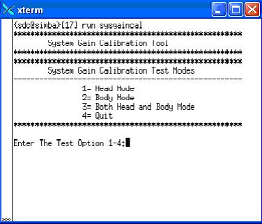
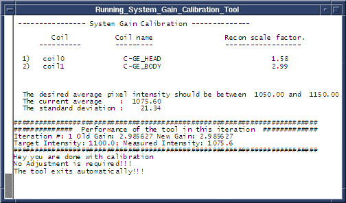
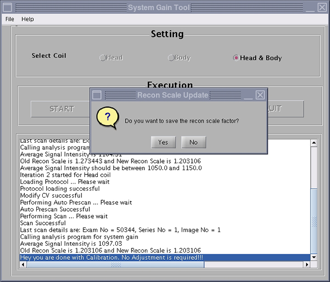

- 00000018WIA30CD1130GYZ
- id_152710884.13
- Jul 28, 2025 6:23:55 PM
System gain calibration
Head and body system gain calibration.
Prerequisites
| Required persons | Preliminary requirements | Procedure | Finalization |
|---|---|---|---|
| 1 | 5 minutes | Head and Body 20; Body 10; Head 10 minutes | Head and Body 2; Body 2; Head 2 minutes |
| Item | Quantity | Effectivity | Part number | Manufacturer |
|---|---|---|---|---|
| Body TLT sphere for 1.5T | 1 | - |
2135650 | - |
| Body TLT loader for 1.5T | 1 | - |
2135652 | - |
| Head TLT sphere for 1.5T | 1 | - |
46-265826G6 | - |
| Head TLT loader for 1.5T | 1 | - |
46-287900G3 | - |
| Head loader positioner | 1 | - |
5110241 | - |
| Service filler panel | 2 | curved tables |
5344577 | - |
| Condition | Reference | Effectivity |
|---|---|---|
|
No required conditions. | - | - |
About this task
Overview
System gain calibration is performed to determine the standard head (transmit/receive coil) and body recon scale factors that will achieve a known level of image intensity when using the standard head coil or body coil with a known phantom solution and protocol. The goal is that when the same solution or tissue is scanned in either the standard head or body coil with the same protocol, those tissues will have approximately the same image intensity level on a given system and between systems of like type.
This calibration accounts for differences in standard head and body receive coil sensitivity, preamp gains, cable loss, receiver gain, and other factors. The calibration must be done on standard head and body at least once to calibrate those paths. The procedure can calibrate both standard head and body together, only head, or only body. System gain calibration consists of:
- Head and body calibration section.Note Although these calibrations can not be run simultaneously, they can both be selected at the same time to run serially. Otherwise, run individual modes as listed in the next two options.
- Body calibration section
- Head calibration section
|
Receive chain |
Magnet field strength | System gain value |
| RRx | 3.0T | 10 |
| 1.5T | 2.5 | |
|
Note The values in this table are meant to illustrate the typical system gain values that may be observed on site. System gain varies by receive chain and should be calibrated for each site.
| ||
Preliminary setup
About this task
Procedure
Calibrations (in software versions prior to DV26)
Procedure
-
Head and Body Calibration
- At the System Gain Calibration Test Modes menu, type 3 and press Enter to select Both Head and Body Mode. The calibration begins.
Head gain is calibrated first. When head is complete, body is calibrated. The following two illustrations apply to both head and body.
Figure 5. Starting system gain calibration tool (prior to DV26) 
- The calibration results display on the screen. If adjustments are required, the system asks, Do you want to save the recon scale factor? Type Y and press Enter to save the recon scale factor.Note There are (at least) two prompts: one for head and one for body.
Figure 6. Calibration output (prior to DV26) 
- At the System Gain Calibration Test Modes menu, type 3 and press Enter to select Both Head and Body Mode. The calibration begins.
-
Body Calibration
- Note The system is dependent on landmarking the head coil, even for body only scans.Type 2 and press Enter to select Body Mode, and the calibration begins. (See Starting system gain calibration tool (prior to DV26).)
- When the test is complete, the calibration results display on the screen. If adjustments are required, the system asks, Do you want to save the BODY recon scale factor? Type Y and press Enter to save the calibration file. (See Calibration output (prior to DV26).)
- Type 4 and press Enter to exit the tool. The calibration is complete.
-
Head Calibration
- Type 1 and press Enter to begin Head Mode. (See Starting system gain calibration tool (prior to DV26)).
- When the test is complete, the calibration results display on the screen. If adjustments are required, the system asks, Do you want to save the HEAD recon scale factor? Type Y and press Enter to save the calibration file. (See Calibration output (prior to DV26).)
- Type 4 and press Enter to exit the tool. The calibration is complete.
Calibrations (in software versions DV26 and for RRX receiver systems DV26 and later)
Procedure
-
Head and Body Calibration
- In the System Gain Tool window, select Head & Body and then select START. Calibration begins.
Head gain is calibrated first. When head is complete, body is calibrated. The illustrations below apply to both head and body.
Figure 7. Starting system gain calibration tool (DV26 and later) 
- The calibration results show on the screen. If adjustments are required, the system asks, Do you want to save the recon scale factor? Click Yes to save the recon scale factor.Note There are (at least) two prompts: one for head and one for body.
Figure 8. Calibration output (DV26 and later) 
- In the System Gain Tool window, select Head & Body and then select START. Calibration begins.
-
Body Calibration
- Note The system is dependent on landmarking the head coil, even for body only scans.Select Body, and then click START. Calibration begins. (See Starting system gain calibration tool (DV26 and later).)
- When the test is complete, the calibration results show on the screen. If adjustments are required, the system asks, Do you want to save the BODY recon scale factor? Click Yes to save the calibration file. (See Calibration output (DV26 and later).)
- Click QUIT to exit the tool. The calibration is complete.
-
Head Calibration
- Select Head, and then click START. Calibration begins. (See Starting system gain calibration tool (DV26 and later).)
- When the test is complete, the calibration results show on the screen. If adjustments are required, the system asks, Do you want to save the HEAD recon scale factor? Click Yes to save the calibration file. (See Calibration output (DV26 and later).)
- Click QUIT to exit the tool. The calibration is complete.
Calibrations (SW version 27 and later)
Procedure
Finalization
Procedure
- Remove all phantoms and service tools from the patient table.
- If you are doing this calibration during an installation, continue with the required calibrations. Otherwise, complete a SaveInfo to save the new ReconScale values.